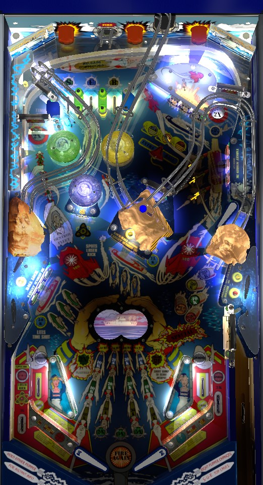

Try to always be in multiball so that you have a safety net for shooting dangerous standup targets. Right orbit and right ramp are locks: orbit -> ramp -> orbit gives 3-ball multiball, orbit -> orbit or ramp -> orbit gives 2-ball. Hit a flashing standup target to light it. Hit all 3 in a bank, then hit any target in that bank again, to sink a ship. Ships contribute to end of ball bonus. Light one of each ship to qualify the Destroy Fleet hurry-up at the left orbit for 250,000. Each time a colour is advanced to exactly 3 completions, right ramp is lit for jackpot; collect it before getting another colour to 3 completions for best value. Right ramp award is random and changed by the right orbit spinner; NEVER get hold bonus.
A full plunge goes up the otherwise-inaccessible center ramp, loops around behind the back panel, and is spit out at the top lanes. Roll through an unlit lane to light it. Rolling through the S, U, and B lanes spots one target in the green, blue, and yellow standup banks respectively. Making the right ramp shot spots one of the S-U-B top lanes for you. Top lanes cannot be used to sink a boat and advance a colour; this spotting feature can only qualify the three initial hits for a sunk ship.
Completing the top lanes by lighting all three will unlight them and advance the bonus multiplier in the sequence 2x-3x-5x. Completing the top lanes also lights the right spinner for 5,000 points per spin for the rest of the ball, which is very good value.
There are three sets of 3 standup targets: green in the lower left, blue in the center, and yellow in the upper right. To start, all targets in all banks are flashing. Hit a flashing target to light it solidly. When all three targets are solidly lit, the bank will flash red; hit any target in that bank to sink its ship and advance the corresponding colour. Advancing blue scores 25,000 points, advancing green scores 50,000, and advancing yellow scores 75,000.
Advancing a colour lights the next torpedo of that colour from left to right in the grid near the flippers. The end of ball bonus is equal to the sum of all lit torpedos; so, for each colour, you earn 10,000 points in base bonus if you advanced it 1 times, 30,000 if you advanced it 2 times, 60,000 if you advanced it 3 times, and 100,000 if you advanced it 4 or more times. If the ball drains and no colours were advanced at all, your base end of ball bonus is just 1,000 points. All values listed in this paragraph are multiplied by the bonus multiplier of up to 5x earned from top lanes. The maximum possible end of ball bonus is 1,500,000 points.
When a colour is advanced, that colour's ship is lit at the left orbit. Advancing all three colours once to fully light the left orbit starts the Destroy Fleet hurry-up, which lasts 10 seconds. Shooting the left orbit in this time scores 250,000 points and instantly advances all 3 colours once. If time runs out before the Destroy Fleet is collected, advancing any colour one more time will restart the Destroy Fleet timer. If Destroy Fleet is collected, you must advance all 3 colours at least once each to qualify it again.
Any time a colour is advanced for the 3rd time, the right ramp is lit for a jackpot. The jackpot scores 100,000 points for each currently lit torpedo in the grid; this is a maximum of 1,200,000 points if all three colours have been advanced four times. However, you do not want to build this jackpot up to its maximum value before collecting it. If the jackpot is lit, then gets immediately collected, then another colour is advanced for a 3rd time, the jackpot will relight and can be collected again. However, if jackpot is lit and another colour is advanced for a 3rd time before the previous jackpot is collected, you will have lost one opportunity to collect the jackpot, and the torpedo advance rules mean there can only ever be a maximum of 3 jackpots available per ball in play.
When the jackpot is ready, the insert labelled "100K per hit" just to the right of the torpedo grid will be flashing. If you notice this light is flashing, shoot the right ramp before doing anything that may award a 3rd advance in one of the colours that has not already reached that level.
The two locks in the game are the top left saucer (accessed by the right orbit) and the right ramp. I refer to them as the orbit lock and the ramp lock for simplicity. Locks are available at any time unless multiball is already running. If at least one ball has been locked, shooting the orbit lock will start multiball. However, if there are no locked balls, the orbit lock will itself lock a ball for you. There are 2 ways to have a 2-ball multiball: shoot the ramp lock then the orbit lock, or shoot the orbit lock twice. The only way to have a 3-ball multiball is to first lock a ball at the orbit, then lock a ball at the ramp, then use the orbit saucer to release all locks. If you shoot the ramp when there is already a ball in the ramp lock. the already-locked ball will be fired to the upper right, and the recently-shot ball will become the ramp lock; on a well-maintained machine, the fired ball will take the same path as a right orbit shot and end up in the top left saucer, starting multiball.
There are no multiball-specific scoring features. Use multiball to complete more ships and advance more colours with added efficiency and safety. Multiball is also a good time to start 2x Playfield (see below) and/or whale on the spinner in the upper right for 5,000 or 10,000 points per spin. Destroy Fleet and the Jackpot are available in both single-ball and multiball play. Balls shot into either lock during multiball will be immediately kicked out, but as soon as single-ball play resumes, the two lock shots will immediately revert to making progress toward the next multiball. Locked balls can be stolen in a multiplayer game.
Rolling through either in lane lights the opposite orbit shot white for 10 seconds. Making a lit white orbit shot activates 2x Playfield Scoring for 15 seconds. I am not certain whether this can be used to double the Jackpot value, but it definitely does double the value of other features including a lit spinner or Destroy Fleet.
Knocking down a drop target starts a 40-second timer; the drop targets will reset if they are not completed before the timer runs out. The first four completions of the drop targets on a ball score 25,000, 50,000, 100,000 points, and extra ball, respectively; any completion after the 4th always scores just 25,000 points.
In addition to its duties as a lock shot and the jackpot shot, the right ramp can be lit semi-randomly for any of 5 different values, indicated by lights on the depth charge bombs in front of the ramp: 20,000 points, 30,000 points, 40,000 points, Hold Bonus, or Extra Ball. Making the ramp scores the currently lit value and resets the lit value to 20,000 points. The spinner in the right orbit randomizes which award is lit.
Contrary to almost every other pinball game ever made, collecting Hold Bonus in this game is a bad idea, and if you notice that the right ramp is lit for hold bonus, you should immediately try to change its value using the right spinner to ensure you don't collect it by accident. Why is Hold Bonus a bad idea? Hold Bonus preserves your lit colour advances to the next ball. If you carry over one or more colours that have already been advanced 3 or more times, you can't collect a jackpot for those colours on that next ball. Further, Hold Bonus does not carry over your bonus multipliers, only your grid of torpedos. Consider a maxed out torpedo grid: if you hold the bonus to the next ball, you're guaranteeing 300,000 points on the next ball's bonus, with a chance at up to 1,500,000 if you get the multiplier back to 5x. However, if you let the grid reset and work through the progress again, you can collect up to 3 jackpots worth up to 1,200,000 each- realistically earning between 2,000,000 and 3,000,000 across the three combined- while still building back up toward the bonus that you would have earn through the bonus hold anyway. Lighting Hold Bonus locks you out of possible jackpots totalling several million points, and should be rightly avoided as such.
Torpedo Alley has a conventional in/out lane setup. In lanes score 3,000 points when lit, and 1,000 points when not lit; rolling through a lit in lane will unlight it, and in turn light the opposite orbit for 10 seconds. Hitting the lit orbit starts 2x Playfield scoring for 15 seconds. In lanes relight when the opposite orbit's 2x Playfield chance times out or is collected. Out lanes score 3,000 points and can be lit for Special by advancing two or more colours of ships at least 4 times each; maxing out 2 colours lights one out lane for the special, and maxing out all 3 colours lights both out lanes.
There is an automatic kickback in the left out lane, referred to as the laser kick. The kickback is lit at the start of each ball, unlights once used, and is relight by hitting the lone standup target attached to the blue pop bumper.
See the second paragraph of "Sinking ships" above.
A setting does exist that converts Special into points for competition/novelty play, but I do not know how many points that is; I would expect something between 250,000 and 1,000,000. There does not seem to be an equivalent setting that assigns a point value to extra balls.
The ability to spot S-U-B top lanes with the ramp shot can be disabled.
The game can be set so that S-U-B top lanes can only spot a target in the respective colour banks a maximum of 3 times during the game.
The jackpot can be set up so that it advances each time a colour reaches 4 advances, rather than 3. This makes it harder to get to the jackpot, but increases the average value of the jackpot.